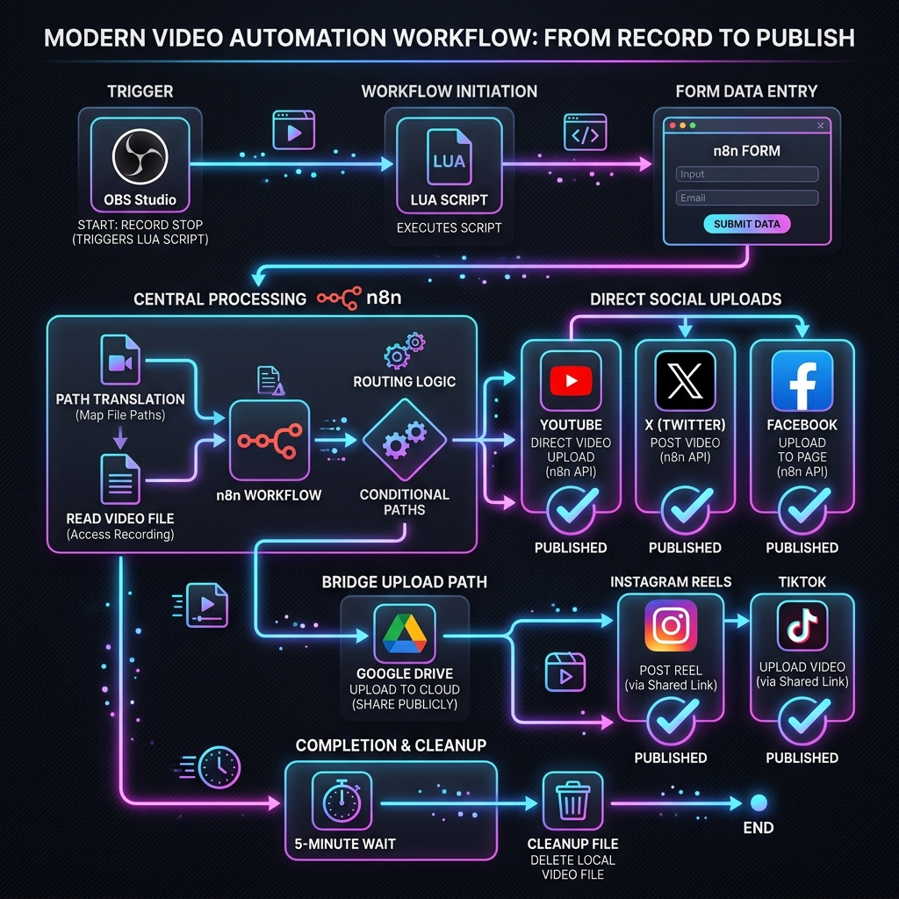

A seamless, self-hosted automation pipeline to instantly upload your OBS Studio recordings to YouTube, Instagram Reels, TikTok, X (formerly Twitter), and Facebook Pages using a local n8n instance and a Lua script.
Upload your content directly to all major platforms simultaneously, with zero third-party cloud hosting fees.
Integrates with the TikTok Content Posting API using Login Kit (OAuth2 PKCE) to securely upload OBS videos directly to your TikTok feed as a draft or a published post.
Leverages the YouTube Data API v3 to automate uploading video files directly to your channel, with customizable titles, descriptions, and privacy settings.
Uses a Google Drive cloud bridge to securely transfer video files to the Meta Graph API to auto-publish Reels, clean up assets, and manage containers.
Publishes high-definition videos straight to your Facebook Pages using direct Graph API calls with permanent authorization tokens.
Uploads video binaries and publishes text posts to your X account using modern OAuth 2.0 user credentials.
Automatically triggers a browser tab with a beautiful, custom HTML5 video player local preview page when you stop recording, allowing final review before publishing.
The entire pipeline executes locally on your machine, giving you absolute control over your credentials and media assets.

An OBS Studio Lua script monitors recording events. When you click "Stop Recording," it identifies the output file path and opens a browser preview page with encoded parameters.
Review the local video stream in your browser. Fill in the title, description, and check the target platforms. When you submit, the form communicates with your local n8n instance.
The n8n container translates paths from Windows to Docker, reads the local file binary, and distributes the video to the checked social channels using OAuth2 integrations.
Clone the repository to your machine, configure volume mounts to point to your OBS recordings folder inside docker-compose.yml, and launch the service:
git clone https://github.com/GitGud031005/n8n-obs2socials.git cd n8n-obs2socials docker-compose up -d
Open http://localhost:5678 in your web browser. Import the socials_upload.json file template, configure your developer credentials for the platforms you want to publish to, and set the workflow to Active.
In OBS Studio, navigate to Tools → Scripts, add obs_to_n8n.lua, paste your webhook preview URL from the local n8n instance, and check "Open Browser on Stop".